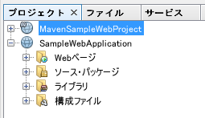

プログラミングに最適なフォントの使用
Windows の場合、デフォルトフォントは「MS ゴシック」などになっているので、「メイリオ」や等幅は「Consolas」に変更するのがおすすめ
NetBeans
- メニューバー「ツール」→「オプション」
- 「フォントと色」を選択し、「フォント」の右の「...」から設定
### エディタ以外のフォントのアンチエイリアスを有効にする
/etc/netbeans.conf を開く - netbeans_default_options の値の最後に
-J-Dswing.aatext=true -J-Dawt.useSystemAAFontSettings=onを追加し、NetBeans を再起動 設定例： netbeans_default_options="-J-client -J-Xss2m -J-Xms32m -J-Dapple.laf.useScreenMenuBar=true -J-Dapple.awt.graphics.UseQuartz=true -J-Dsun.java2d.noddraw=true -J-Dsun.java2d.dpiaware=true -J-Dsun.zip.disableMemoryMapping=true -J-Dswing.aatext=true -J-Dawt.useSystemAAFontSettings=on"
プロジェクトビューなどのフォントも見やすくなる 
参考：[Fedora19] NetBeans7.4 Editor Setting Fontのアンチエイリアス(Anti-Aliasing) : J-Linuxer
Eclipse
- メニューバー「ウィンドウ」→「設定」
- 「一般」>「外観」>「色とフォント」を選択
- Java 等のエディタテキストを選択し「編集」から設定